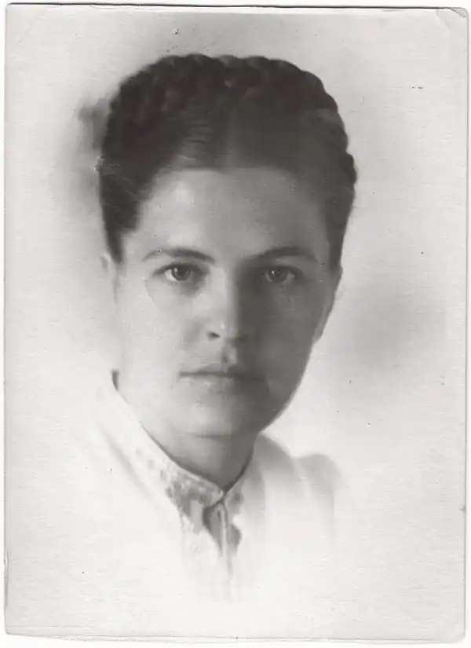
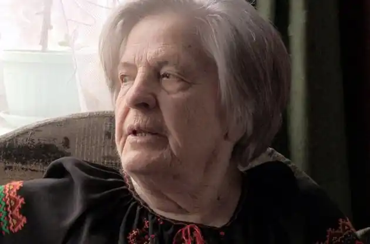

Народилася 10 жовтня 1925 року у м. Вінниці (Україна). 1929 року її родина переїхала до Києва.
Навесні 1946 року Оксану – студентку 3-го курсу Київського медичного інституту – заарештували. Через 1,5 місяці заарештували і її батька – Хращевського Миколу Михайловича, 1887 року народження, філолога, викладача української мови та літератури.
29 серпня 1946 року вироком військового трибуналу м. Києва їх обох засудили на 10 років таборів та 5 років поразки у правах за статтею 54 1а-11 (український націоналізм). Батько, відбуваючи 10 років таборів, помер перед самим закінченням строку. Оксані Хращевській за касацією, поданою матір'ю, зменшили строк таборів до 5 років, після відбуття яких відправили до Сибіру (Красноярський край, Довго-Мостовський район) на довічне заслання. Реабілітацію отримала у листопаді 1955 року, по смерті Сталіна. 1960 року закінчила Дніпропетровський медичний інститут і працювала лікарем-фтизіатром до 73 років. Після виходу на пенсію написала книгу спогадів "Зламаний цвіт", де відтворила все, що пережила під час ув'язнення, у таборі та на засланні. Померла в Боярці 29 жовтня 2017 року.